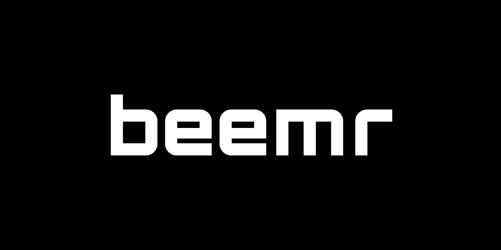

Peer-to-peer file and message sharing. No servers, no accounts, no setup. End-to-end encrypted.
$ beemr share photos/
On the other device, run:
beemr get AlTRKOzvjlzG…
$ beemr msg sara "landed! call you later"
Delivered (direct connection).
Zero configurationDirect connections, NAT hole punching, and relays through other beemr devices.
No serversDevices find each other on the BitTorrent DHT and connect peer to peer.
PrivateEnd-to-end encrypted, device identities, share with one device only.
Install
macOS and any Linux
curl -fsSL https://raw.githubusercontent.com/osmanahmadxai/beemr/main/install.sh | sh
Windows (PowerShell)
irm https://raw.githubusercontent.com/osmanahmadxai/beemr/main/install.ps1 | iex
Debian, Ubuntu, Mint, Pop!_OS (apt)
curl -fsSL https://osmanahmadxai.github.io/beemr/beemr.gpg | sudo tee /usr/share/keyrings/beemr.gpg >/dev/null echo "deb [signed-by=/usr/share/keyrings/beemr.gpg] https://osmanahmadxai.github.io/beemr/apt stable main" | sudo tee /etc/apt/sources.list.d/beemr.list sudo apt update && sudo apt install beemr
Fedora, RHEL, Rocky, Alma (dnf)
sudo curl -fsSL https://osmanahmadxai.github.io/beemr/rpm/beemr.repo -o /etc/yum.repos.d/beemr.repo sudo dnf install beemr
openSUSE (zypper)
sudo zypper addrepo https://osmanahmadxai.github.io/beemr/rpm/beemr.repo sudo zypper install beemr
Snap (any distro with snapd)
sudo snap install beemr
Arch, Manjaro (AUR)
yay -S beemr-bin
Homebrew (macOS and Linux)
brew install osmanahmadxai/beemr/beemr
Scoop (Windows)
scoop bucket add beemr https://github.com/osmanahmadxai/scoop-beemr scoop install beemr
After installing with a package manager, run beemr setup once to name the device and start the background service.
Alpine (.apk), Arch (.pkg.tar.zst), .deb, .rpm and plain binaries are on the
releases page.
Packages are signed with key 5B5C C4E3 B2D2 FD72 1EA8 ECC9 2FF3 31B1 D566 DAFA (beemr.asc).